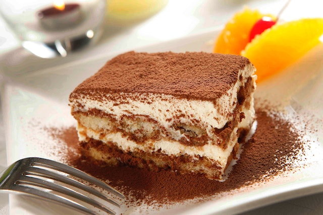

Tiramisu

Classic Tiramisu
A classic Italian tiramisu with egg yolks, sugar, rum, mascarpone,
and whipped cream, layered with coffee-dipped ladyfingers.
Ingredients
- 6 large egg yolks
- 1 cup (200g) sugar
- 3 ounces (6 tablespoons) dark rum
- 1 1/2 cups (12 ounces) mascarpone cheese
- 1 cup heavy cream
- 1 cup boiling water
- 1 tablespoon instant espresso powder
- 1 (7-ounce) package ladyfingers
- Unsweetened cocoa powder for dusting the top
Steps
-
Lightly oil an 8x8-inch baking dish.
-
Set a large heatproof bowl over a pan of simmering water to create a double boiler.
Whisk together the egg yolks and 3/4 cup of the sugar in the bowl.
Continue whisking until the sugar has dissolved.
-
Gradually whisk in 2 ounces (4 tablespoons) of the rum and continue whisking rapidly over the double boiler for about 10 minutes, until the mixture is thick.
Remove the bowl and set aside until cooled.
-
Whip the mascarpone on medium speed for 15 to 30 seconds, until it smooths out and softens.
With the mixer still on medium speed, gradually add the cream in a slow stream until it's all incorporated and the mixture holds firm, but not-quite-stiff peaks.
-
Fold 1/3 of the whipped cream into the zabaglione to lighten it, then fold in the remaining whipped cream.
-
In a bowl, whisk the remaining 1/4 cup sugar with the remaining 1 ounce (2 tablespoons) of rum, boiling water, and espresso powder.
-
Dunk the ladyfingers in the espresso liquid and arrange in rows on the bottom of the baking dish.
Spread 1/2 of the mascarpone mixture over the top of the ladyfingers layer and repeat to create a second layer.
-
Cover and refrigerate for at least 8 hours.
-
Dust with cocoa before serving.